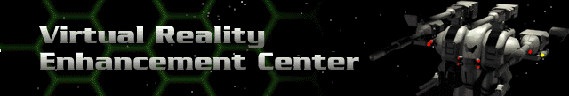
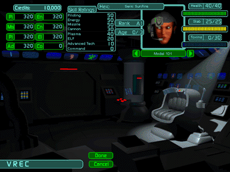

› |
› |
› |
Virtual Reality Enhancement Center |

Bioderms have distinct skills. A list of eight skills is shown beside each one in the Bioderm Facility Biovat. The VREC is where you “train” your Bioderms to enhance each of these skills:
| Piloting | The terrain of the Cyberstorm System is varied and treacherous and requires skilled piloting to successfully maneuver. The better skilled a Bioderm is at this, the less reactor energy that is required for Herc movement. Also, higher piloting skills translate to a lower chance for opponents to hit. |
| Energy | Energy weapons use a variety of radiated and directed energy effects to do damage against enemy systems. Energy weapons do a great deal of damage to enemy shields. |
| Missile | Missiles can be very powerful, but can be disrupted by electronic countermeasures and shields which cause them to explode prematurely and dissipate much of their effect. |
| Cannon | Cannon weapons hit fast and hard enough to penetrate most armor; however, they are ineffective against shields. In addition, they are short range, limited by the amount of ammunition carried, and only moderately effective against modern targets, but they’re reliable and use almost no power. |
| Plasma | Plasma weapons fire spheres of energetic plasma contained in a stable electromagnetic shell. The shell and plasma energy massively disrupt the target’s shields, and the plasma itself does lesser damage to armor through thermal effects. |
| Electron Flux | The ELF creates a conduit of charged electromagnetic flux that is very effective at passing through shields to strike an enemy’s armor. |
| Advanced Technology | Other weapons which fall outside of traditional skill classifications. |
| Command | Command Bioderms have leadership ability. Only certain Bioderms are created with it. |
A complete list of the weapons by category can be found in the Weapons listing in this manual. Also, during your career, detailed descriptions of each weapon are given in the Manage Hercs section of the Herc Bay and in the Damage Model section while in the Battlefield.
 |
First, scroll to the Bioderm whose ratings you wish to affect. Click on the button to the left of any of the skills to increase them incrementally. You may only increase any skill halfway to the maximum rating attainable by that Bioderm. In other words, an initial skill rating of 75 can only be improved to 87 if the maximum is 99. Choose your enhancements wisely. It costs more to improve a skill each time and with less improvement as a result. See Bioderm Rank for how Bioderms progress in rank. |